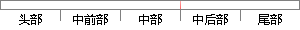

双击，在弹窗中点击再点击工件；
片段位置图

相似结果|
相似片段 1：重复上述操作，完成所有点的设置。2打孔点(1)切换到CATIA的高级机械平台，双击CATIA结构树上的“PartOperation”以弹出窗13。点击弹窗按钮“Machine”，然后点击按钮
相似片段 2：（3）增加患者信息：双击左上角“新贴片”图标，出现弹窗后点击图 5界面上的“增加患者”图标，进入增加患者界面。在弹出界面内输入患者的信息（人口统计学信息、疾病诊断、手术方式、手术时长、麻醉时长、既往史
相似片段 3：在弹窗中勾选“ValidationRunPerf rmed"，弹窗中点“是"。勾选“GeneofInterestQuantitation”，再选择目的因子所在页面，此时弹出该因子的扩增曲线图。点击
相似片段 4：大家采用第三方软件直接屏蔽弹窗广告。这里使用的是《腾讯QQ电脑管家》，具体方法是：(1)双击{QQ电脑管家》，点击进入右下角的“工具箱”；(2)点击“系统”●杨洪j哎一“软件弹窗拦截”，下载并安装软件
相似片段 5：的区域的顶点，并以双击结束，在弹出的浮动信息栏中会显示出测量结果。(4)路径分析：在动作按钮栏中点击“路径分析”按钮，在地图中点选出需要分析的路径中的关键点，并以双击结束，地图上会显示出路径示意，并在弹出
相似片段 6：／100浓度的设为100，1／1000浓度的设为10，1／10000浓度的设为1。④点击软件中的“Analysis”，选择弹窗中的“Quantitation'’选项卡，双击打开选定的因子所在页面，点击
相似片段 7：”修改为“0
相似片段 8：工具，构造控制轴。双击参数“c”，在“参数属性"窗口中，将“最大”修改为“l”，“最小”修改为“I”，“小数位”修改为“0．01”，取消选中“显示名称"，选中点“Q”添加为“绑定动点”。点击“◆／坐标系
|
※ 片段修改建议 ※
近似词参考：